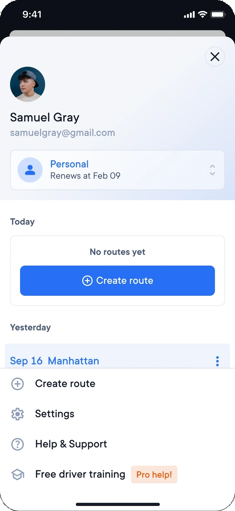
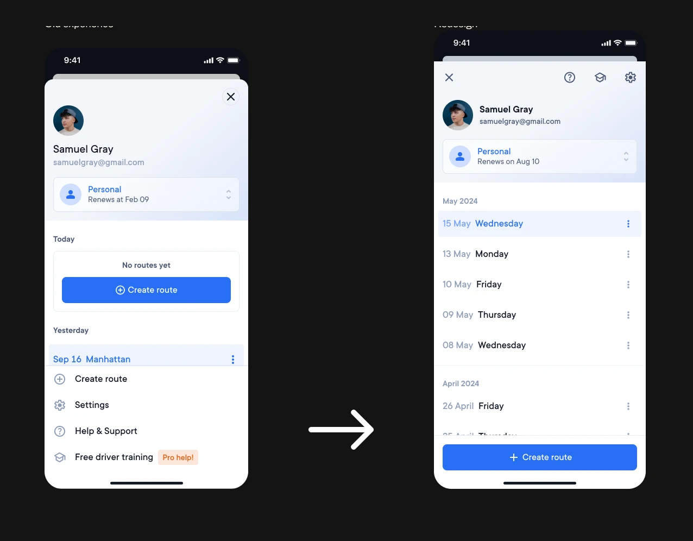

App Main Menu
Update the menu to have more list space and a fixed “Create route” button.
Problem
- “Create route” button was duplicated and too subtle when the daily list was not empty
- Small area for the list, lack of space to scroll
- Fixed footer with options that are not used too often
- Header taking too much vertical space, an issue on smaller devices

Redesign
A compact header with close, help, training and settings, a longer list of days, and one fixed “Create route” button at the bottom.
